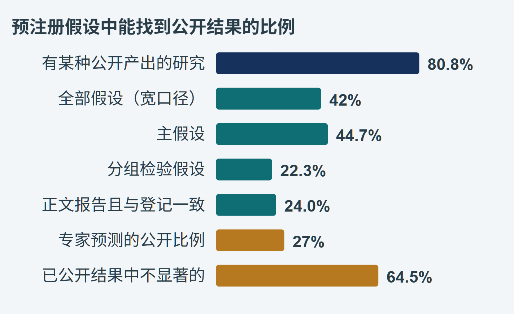

没写出来的研究结果

317项预注册随机试验的5057个假设，八九年后只有42%能找到公开结果。
已公开的结果中约64%在统计上不显著，零结果并没有被明显地藏起来。
给作者寄去预填好的“结果报告”，有公开结果的假设比例提高6.2个百分点；只发提醒没有显著效果。

作者认为，报告预注册结果应成为研究的常规环节，而不是事后多年再追补。
这事有研究 / 国际科技智库周报
加州大学伯克利分校全球有效行动中心、挪威经济学院 · 2026-11-13（本期补录；美国国家经济研究局工作论文36044同月上线） · 工作论文，95页
没写出来的研究结果
317项预注册随机试验的5057个假设，八九年后只有42%能找到公开结果。
已公开的结果中约64%在统计上不显著，零结果并没有被明显地藏起来。
给作者寄去预填好的“结果报告”，有公开结果的假设比例提高6.2个百分点；只发提醒没有显著效果。
作者认为，报告预注册结果应成为研究的常规环节，而不是事后多年再追补。
摘要导读
把“是否发表论文”换成“每个预先登记的假设有没有结果”来衡量，经济学未报告的研究结果远比想象多；原因不主要是藏起零结果，事后追补的效果也有限。
研究结果没有公开，常被称为“抽屉问题”：做了的研究放进抽屉，别人看不到，可能重复投入，也可能让文献整体结论失真。通常的测量方法是看一项研究有没有产出论文，但一篇论文可能只报告了原计划检验的一部分假设。加州大学伯克利分校Edward Miguel、挪威经济学院Bertil Tungodden等7位作者，借助美国经济学会随机对照试验登记平台的预注册信息，把测量单位细化到每个预先登记的假设。论文11月13日作为全球有效行动中心工作论文发布，随后列入美国国家经济研究局工作论文。研究由挪威研究理事会卓越中心计划资助。
样本和做法。 作者从2015年1月至2017年5月的913份登记中，剔除事后补登、同一负责人的重复登记等，得到317项研究；按统一规则把登记信息和预分析计划拆成5057个假设（每项研究平均近16个、中位数9个），再逐一检索论文、工作论文、报告和作者网页，找每个假设有无公开结果。编码一项研究平均约需11个小时。
结果一：缺失面很大。 登记八到九年后，80.8%的研究有某种公开产出，但平均只有42%的假设能找到结果；只有20.2%的研究报告了全部假设，12.3%的研究发表了论文却没有一个预注册假设的结果。按最严格的口径（在论文正文报告、且与登记的假设一致），这一比例只有24.0%。分组检验（比较不同人群效果）的公开比例只有22.3%，主假设为44.7%；在中低收入国家开展的研究为37.8%，高收入国家为49.8%；发表在经济学五大顶级期刊的研究为41.3%，其他期刊为55.3%。

数据来源：全球有效行动中心工作论文268号，2015—2017年美国经济学会随机对照试验登记平台上的317项研究、5057个假设，各比例为研究层面平均值。第一行是研究层面指标，其余为假设层面；专家预测来自68位专家。
结果二：零结果并不少见。 已公开的结果中，平均64.5%在5%的水平上不显著，近三成研究中至少九成结果不显著。68位专家此前的预测是只有37%，91%的专家低估了这一比例；他们对结果公开比例的预测是27%，也低于实际的42%。唯一明显的差别出现在顶级期刊：其中不显著结果的比例为51.3%，其他期刊为65.3%。
结果三：直接联系作者有用，但作用有限。 研究同时做了一项随机实验，把研究分为对照、提醒、参与和资源四组：提醒组收到说明报告意义的邮件和空白“结果报告”模板；参与组收到按其登记内容预先填好、标明哪些结果已找到的结果报告；资源组在此基础上可获得最多30小时研究助理支持或1500美元。约六个月后复查：参与组和资源组合计使有公开结果的假设比例提高6.2个百分点，约相当于原先缺失结果的11%；只发提醒没有显著效果，额外的人力支持也没有带来进一步提高（14项研究表示有兴趣，实际6项使用了助理支持）。干预后新公开的结果中不显著的占68.4%，与原先的64.1%没有显著差别。连同作者对缺失原因的解释，“下落不明”的假设比例下降16.4个百分点，但受干预研究中仍有44.8%的假设既无结果、也无解释。作者给出的解释包括干预未实施、数据未收集、分析尚未完成、统计功效不足等。
作者的判断与局限。 作者认为，经济学的漏报很普遍，但主要不是压下零结果，可能与研究者只报告能讲成完整故事的结果有关，这一推测数据无法直接检验；顶级期刊中公开比例和零结果比例都更低，原因可能有多种，无法排除混杂因素。他们主张把报告预注册结果作为研究流程的常规环节，并配套相应基础设施，论文提出的标准化“结果报告”格式也可供登记平台和期刊使用。